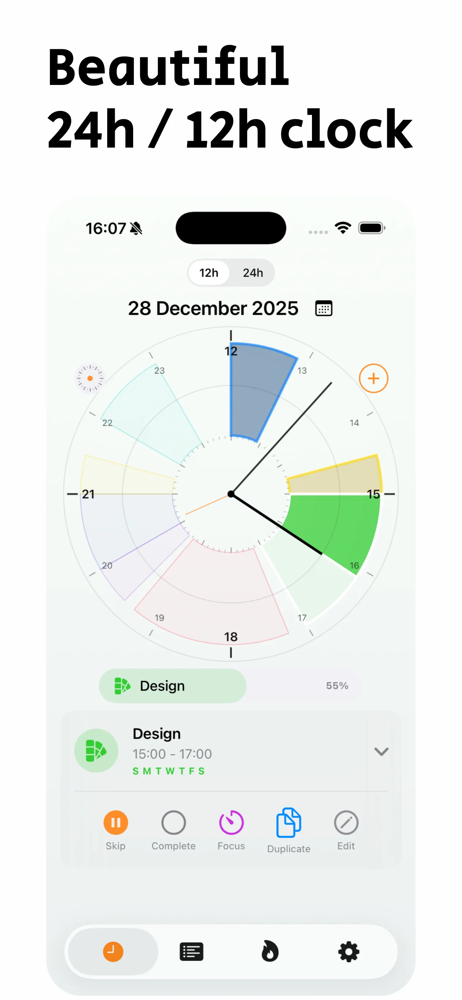
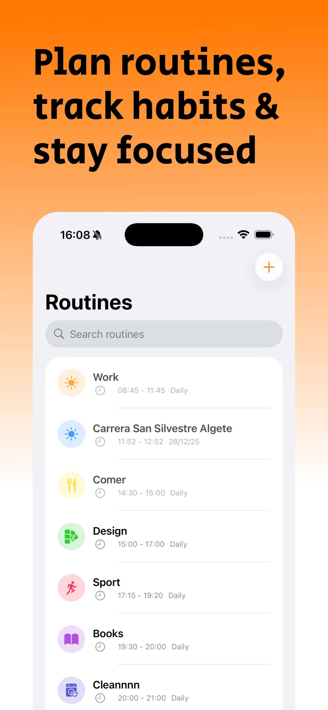
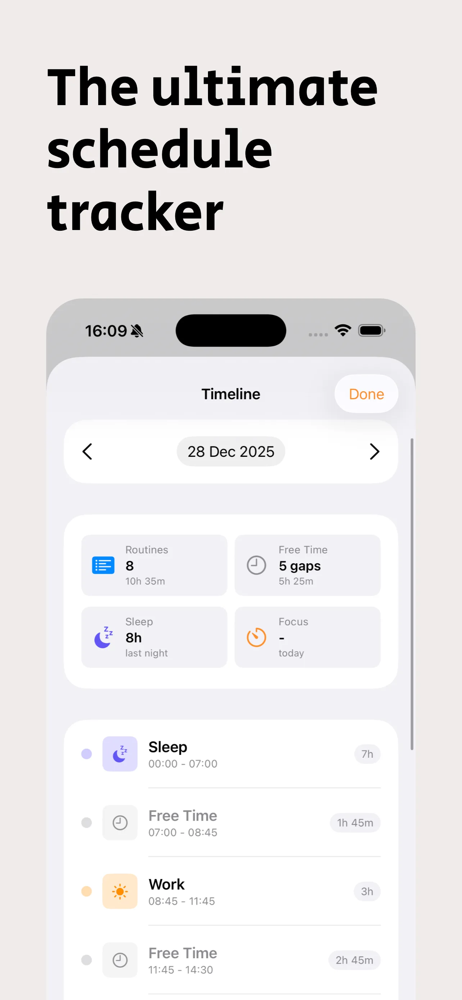
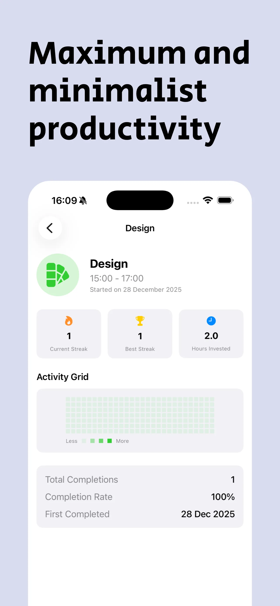
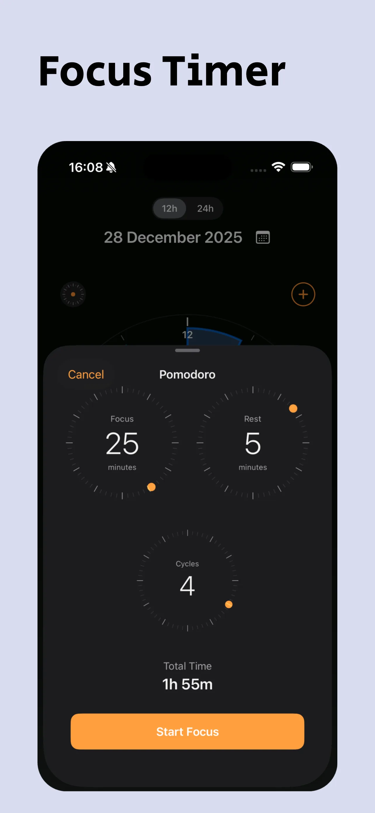
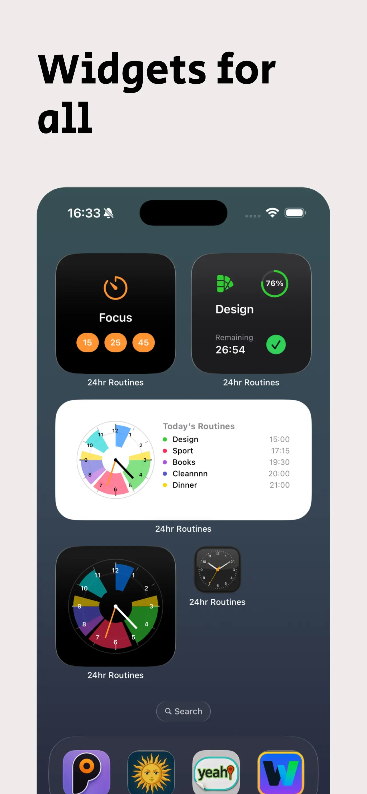

24h Routines
Tu día entero, en un solo reloj.
Dibuja tus rutinas sobre un reloj de 24 horas. Ve de un vistazo qué toca ahora y cuánto tiempo libre te queda.
Capturas
Así se ve






Qué hace
Un reloj para organizar tu día
Cada rutina es un trozo del reloj. Tu día completo, siempre a la vista.
Todo el día a la vista
Tus rutinas aparecen como sectores en un reloj de 12 o 24 horas.
Tus huecos libres
Mira cuánto tiempo te queda entre una rutina y otra.
Constancia sin presión
Marca cada rutina como hecha y sigue tus rachas.
Cómo funciona
Tres pasos y listo
Empezar lleva un minuto.
Crea tus rutinas
Elige nombre, icono, color y horario. Pueden repetirse o ser de un solo día.
Míralas en el reloj
Cada rutina ocupa su hueco. Tócala para completarla, saltarla o editarla.
Sigue tu progreso
Consulta tus rachas, tus horas y tu día completo en la línea de tiempo.
Funciones
Todo lo que puedes hacer
Pensado para que organizar el día sea sencillo.
Reloj de 12 o 24 horas
Cambia de vista con un toque.
Recordatorios
Un aviso antes de cada rutina, si quieres.
Modo enfoque
Sesiones de concentración con descansos, también desde la pantalla de bloqueo.
Modo ZEN
Una vista limpia y despejada para concentrarte en el momento presente sin distracciones.
Ajustes inteligentes
Detección automática de rutinas superpuestas con sugerencias inteligentes para optimizar tu tiempo.
Rachas y estadísticas
Tu mejor racha, tus horas dedicadas y tu constancia.
Widgets
El reloj y tu progreso en la pantalla de inicio y en la de bloqueo.
Siri y Atajos
Pregunta qué rutina toca ahora o empieza un enfoque con la voz.
Sueño y entrenos
Si lo permites, tu sueño y tus entrenos de Salud aparecen en el reloj.
Calendario
Importa eventos como rutinas o exporta tus rutinas al calendario.
Amanecer y atardecer
Marca la salida y la puesta de sol en el reloj según tu ciudad.
iPhone Duo e iPad
Diseño adaptado para iPhone Duo y optimizado para aprovechar al máximo cualquier iPad.
Respuestas directas
Preguntas frecuentes
¿Es gratis?
¿Qué pasa con mis datos?
¿Necesito Salud o el calendario?
¿Funciona en iPad?
¿En qué idiomas está?
¿Cómo pido ayuda?
La app en breve
Novedades
Registro de cambios
Mejor cada día.
- Adaptado para iPhone Duo y optimizado para todos los iPads
- Nuevo Modo ZEN
- Detección automática de rutinas superpuestas que sugiere ajustes inteligentes
- Pantalla de bienvenida mejorada y diseños interiores refinados con minimalismo
- Arreglo de errores, mejora de rendimiento y eficiencia
- 1 - Design improvements: New simplified Timeline view with settings to sort the entire day
- 2 - Performance and functionality improvements
- 3 - New button to skip all routines for the day or for X hours
- 4 - New section centralizing notifications for better granular management
- 5 - Minor bug fixes
- New Quick Actions.
- Siri Integration.
- Focus Timer now with a much better and more robust design using Apple's AlarmKit.
- New view with graphs and data from your routines.
- Better and faster integration of workouts from Apple Health.
- Fix for the bug that caused a desynchronization between the app and widgets.
- New, more dynamic and agile way to create recurring or one-off routines.
- Design improvements for a more efficient workflow.
- Bug fixes and general performance improvements.
- New daily, weekly, monthly, and annual progress bar.
- Fundamental improvement in the logic of periodic and one-time routines.
- New icons available.
- Sync and private backup in iCloud.
- New progress and streaks widgets.
- 5 exclusive widgets for the Lock Screen.
- Native Spotlight integration.
- Added 7 Siri Shortcuts.
- Easily add extra time to a routine. Improved routine creation and editing.
- 3 new languages: German, French, and Italian.
- Design adjustments, fundamental improvements in many sections, and minor bug fixes.